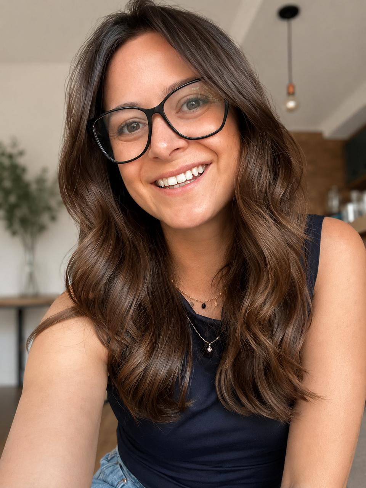

Consulta inicial e acompanhamento individual por videochamada, com orientação baseada em evidências e diretrizes clínicas.
Me conta resumidamente seu caso.
Conversamos sobre a história da sua dor, os tratamentos anteriores, o que você pensa sobre a sua condição e quais são os seus objetivos. Eu analiso os seus exames, se você tiver, e avalio os seus movimentos e as suas limitações.
Com base nos seus objetivos eu vou estruturar a conduta necessária para alcançá-los e apresento o plano de acompanhamento.
Sessões individuais e personalizadas. Dúvidas e orientações tiradas pelo WhatsApp diretamente comigo, ferramentas para organizar as atividades, além de um app com exercícios que já testamos em sessão.
Se for preciso uma avaliação presencial ou médica, você recebe o direcionamento.
Sou fisioterapeuta, com quase 10 anos de experiência atendendo pacientes com dor lombar crônica, hérnia de disco e ciática. Trabalho com educação em dor e Terapia Cognitivo-Funcional (CFT), uma abordagem que junta movimento, compreensão da dor e confiança.
Deslize para o lado para ver mais
O que mais me marcou foi a segurança que senti. A forma como me ouviu, procurou entender e explicou tudo me deixou confiante.
Por ela dar mais atenção na minha dor e fazer eu entender que não está tudo perdido, que eu preciso me movimentar e perder o medo, por ser uma pessoa ótima de conversar e mostrar que realmente está ali para te ajudar.
Ficar tranquila a respeito da dor, que ela não iria me parar.
Entender do que se tratava a dor e como será o acompanhamento.
A confiança transmitida, a clareza da explicação sobre o meu problema.
Foi uma terapia, eu precisava muito desse bate-papo, me sentir acolhida.
Não é necessário, mas se você tiver, me mostre, isso me ajuda a entender seu caso.
Depende do seu caso e de como evolui durante o acompanhamento.
Pode. Durante o acompanhamento você me manda mensagem para tirar dúvidas, inclusive fora do dia da sessão.
Quando o seu caso pede, eu encaminho para uma avaliação presencial ou para o médico.
Sim, já atendi pacientes em 10 países. A gente combina o horário para o seu fuso.
Os valores e as formas de pagamento eu te passo pelo WhatsApp, me envie uma mensagem.
O primeiro passo é uma mensagem. Eu respondo com os horários e tiro as suas dúvidas.